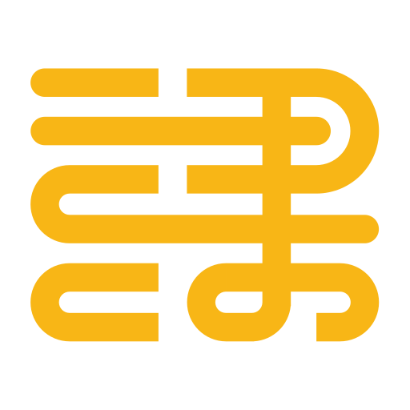
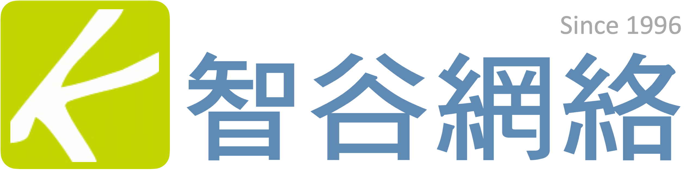

嗨，我是陳盈臻，也有人叫我大師姐
超過 16 年媒體與廣告科技的 B2B 業務與整合行銷資歷——從天下雜誌、關鍵評論網集團到艾迪英特（Ad2iction）， 服務過 450 家以上的品牌、企業與政府單位。所以我很清楚：多數人的問題從來不是「AI 厲不厲害」，而是 「這跟我每天的工作有什麼關係」。
我到現在都看不懂程式碼，卻用 AI 做出了近百個自動化小工具——LINE Bot、自動寄信、廣告素材檢查—— 把過去要花七、八個小時的工作縮成幾分鐘。現在我把同一套方法帶進企業， 一對一陪跑二十多家企業的中高階主管，線上加實體學員超過一萬人。


言果學習
本來以為又是一堂聽完就忘的課，結果當天下午我就把每週那份報表交給 AI 做掉了，現在固定省下三小時。
行銷主管 · 製造業
Vivi 不會丟一堆工具名詞給你，她是先問我們平常怎麼做事，再告訴我們哪一段可以交出去。這對非技術團隊差很多。
人資經理 · 連鎖零售
最有感的是課後那段陪跑。卡住的時候有人可以問，才真的把工具留在團隊裡，而不是課後就沒了。
營運副理 · 物流業
我完全不懂技術，一開始很怕跟不上。她講的每個例子都是我們公司真的會遇到的狀況，我第一次覺得這件事跟我有關。
業務專員 · 金融服務
團隊二十幾個人，程度落差很大。她把課拆成不同節奏，最後大家都帶著自己的一個成果離開，這點很不容易。
部門主管 · 醫療體系
上完課我們內部自己開了一個共用的提示詞庫，現在新人進來直接就能用。這是課程結束後才長出來的東西。
專案經理 · 資訊服務
從第一次聊天到團隊真的用起來，中間會經過這五段
先聽你們每天怎麼工作、卡在哪裡。不談工具，只談實際發生的事。
把工作流程攤開，找出 AI 現在就接得上手、而且省得到時間的環節。
依照團隊的程度與情境設計課程或導入計畫，例子全部換成你們自己的。
不是聽完就結束。當場一起做出第一個成果，帶著它回去用。
過一段時間再回來看：哪些真的留下來了、哪裡還卡著，需要的話補上第二輪。
三種合作方式，看哪一種接得上你現在的狀況


對外開放報名的場次，像《AI 自動化入門：打造高效省時工作模式》，帶你從自己的工作場景開始，當天就做出第一個能用的成果。適合想先試試看的個人或小團隊。


為單一企業客製，從盤點流程、設計課程到課後陪跑全程參與。例子全部換成你們自己的，不講通用範例。


針對你手上的具體情境給建議，包含工具怎麼選、流程怎麼拆、團隊怎麼帶。適合需要有人一起想清楚方向的時候。
一個人做得有限，這些單位讓事情走得更遠